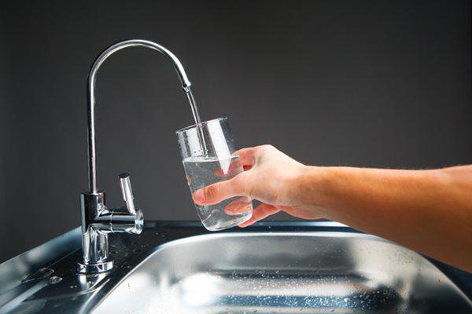

Clean water sources are gradually running out, replaced by polluted water !!!
4.Some measures to protect the clean water source
a) In the family
To limit the pollution of water sources affecting health, every family must have simple water treatment measures such as water filtration. Especially, each person must have a awareness of protecting the water source
Keep clean water: Raising public awareness to keep clean water by not littering, defecating indiscriminately affecting clean water sources; Do not use fresh manure as fertilizer; Use pesticides exactly as directed ...
Save clean water: Reducing wastage when using water for daily activities; inspect and maintain and renovate water pipes and tanks to prevent water loss; reuse pool water, rainwater on appropriate things like yard cleaning, watering plants ...
Handle human feces: Mobilize and apply well solutions to build hygienic latrines (septic, semi-septic, two compartments, flush water)
Handle of animal and animal feces: It is necessary to have a collection plan with hygienic composting pits, barns away from water sources according to hygiene regulations ...
Have Waste water treatment: It is necessary to have a system for treating domestic wastewater (closed underground sewers) and then dump it into a common sewer system, field or river after it has been treated collectively or separately.
The long-term strategy is to provide safe drinking water and to improve sanitation. The short-term strategy is to use simple household water treatments, such as filtering water, boiling water with heat. Besides that, there needs to be an awareness raising campaign, the community must be aware of protecting water resources. in particular, the need to apply stricter regulations on pollution control. All businesses - from small to large scale - are required to meet the minimum standards of waste water in production and business, avoiding environmental pollution. After all, clean water and fresh air are essential for a healthy life.
b) Globally
Existing freshwater resources on earth are also threatened by overuse and pollution. These causes have a terrible impact on people and the ecosystem. In this regard, the participation of civil society plays an essential part. Many of the proposed actions can help water managers and policy makers in the face of ongoing changes. These include both mitigation and adaptation measures. Mangrove restoration helps protect the coast from erosion, rising sea levels as well as reducing the salinity of upstream soils, surface water and groundwater. Policies should be developed and applied taking into account the operational management of the water cycle in general. Recycling water and increasing the amount of artificial freshwater will help reduce the pressure on existing freshwater resources. Application of farming methods ensures the management and restoration of carbon in the soil. Identifying high carbon sequestration ecosystems, such as wetlands, and taking steps to ensure the protection of these areas is also one of the solutions.
Each country needs the tools, institutions and legal frameworks and regulations necessary to allocate, regulate and conserve water resources before climate change. Information systems are essential for monitoring water resources, analyzing systems, making hydro-meteorological forecasts and warnings, and for decision making. Investing in advanced technology will help improve the ability to conserve and protect water resources, recycle rainwater and wastewater, develop water resources, and enhance water storage. Ensuring the adoption and adaptation of these advances is key to strengthening water security around the globe.
Vietnam has 108 river basins with approximately 3,450 rivers and streams. The average annual total surface water is about 830 - 840 billion cubic meters. More than 60% of the water is produced from abroad, only about 310 - 320 billion cubic meters are produced on the territory of Vietnam. The amount of water per capita is over 9,000 cubic meters per year. Groundwater also has a total potential reserve of about 63 billion cubic meters per year, distributed in 26 major water storage units, but concentrated mainly in the Northern Delta, Southern region and Central Highlands. Maintaining and developing water resources sustainably is a top task for managers to make water resources planning for each region and each river basin. Facing the threat of climate change, the protection and development of Vietnam's water resources are not only cliché slogans but are strictly regulated and drastically implemented. It is the policy and regulation of afforestation, contributing funds to afforestation. The flow of water in rivers, streams, canals and ditches is a sign of the vitality of water
Use a water filter to filter out impurities from the water
Back Home page
Main content of the page
- -Concept of clean water and its role
- -Real situation of clean water around the world and in Vietnam
- -Concept of polluted water and its causes
- -Remedy for polluted water
Page information
-
 Overview
Overview
-
 Suggestion box
Suggestion box
-
 Telephone number: 0706893807
Telephone number: 0706893807
Overview
Suggestion box